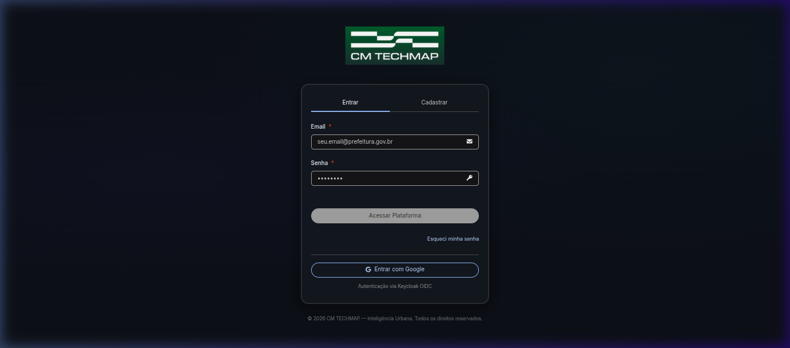
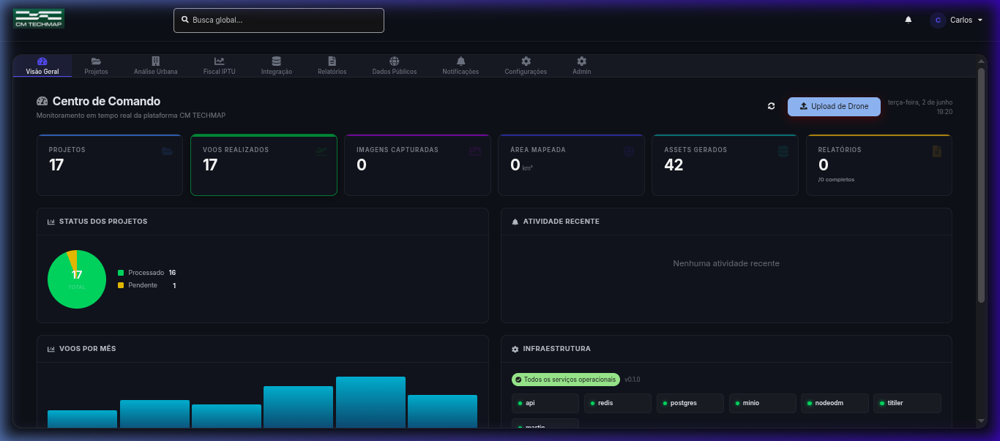
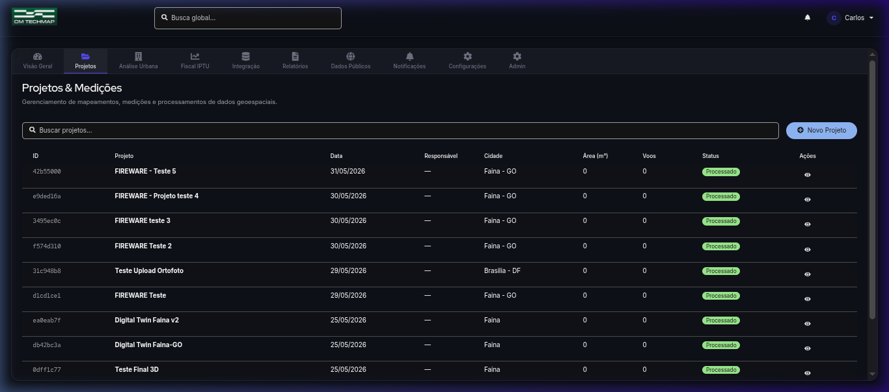
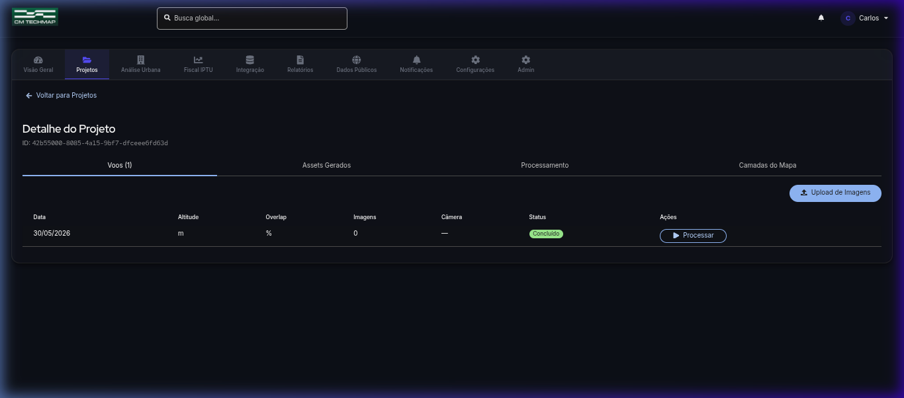
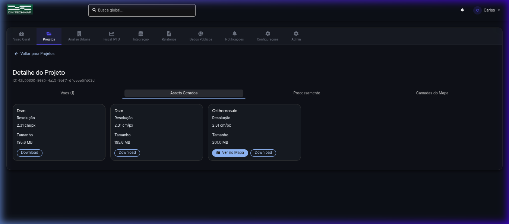
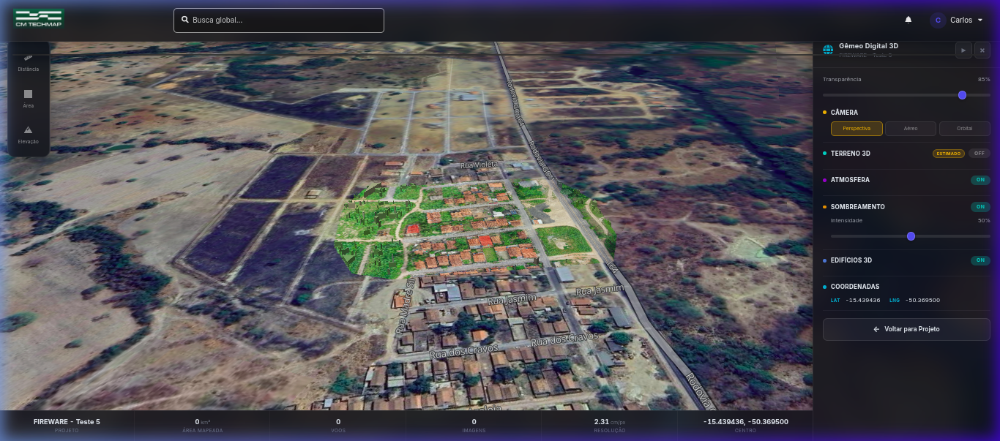
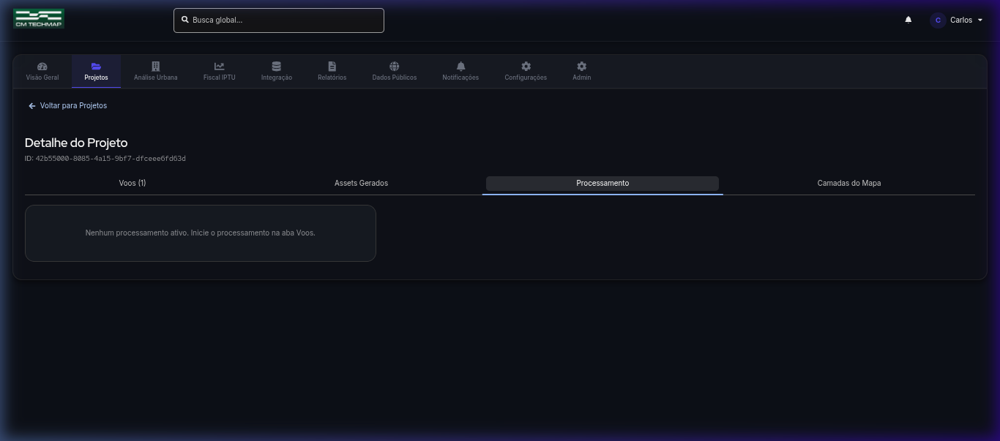
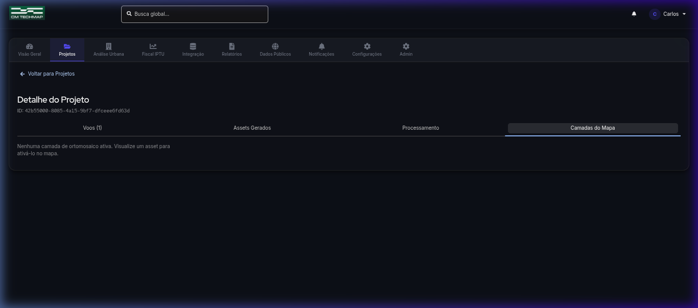

1 Visão Geral do Sistema
O CM TECHMAP é uma plataforma web de mapeamento aéreo e análise geoespacial desenvolvida para a gestão urbana municipal. O sistema permite o upload de imagens capturadas por drones, processamento fotogramétrico automatizado (via NodeODM), visualização de ortomosaicos georreferenciados em mapas 3D interativos e ferramentas de medição geodésica.
Upload de Imagens de Drone
Faça upload das imagens aéreas capturadas em campo diretamente para o projeto.
Processamento Automático
O NodeODM processa as imagens e gera ortomosaicos, DSM e modelos 3D automaticamente.
Mapa 3D Interativo
Visualize ortomosaicos sobrepostos ao mapa com controles de terreno, câmera e atmosfera.
Medições Geodésicas
Meça distâncias, áreas e elevações diretamente sobre a imagem georreferenciada.
Edifícios 3D
Visualize footprints de edifícios extrudados em 3D sobre o terreno real.
Dashboard em Tempo Real
Monitore KPIs, status de projetos e saúde dos serviços em um centro de comando.
2 Acessando o Sistema
Para acessar o CM TECHMAP, abra o navegador e acesse o endereço fornecido pelo administrador.

https://cmtechmap.prefeitura.gov.br)3 Centro de Comando (Dashboard)
Após o login, você será direcionado ao Centro de Comando — a tela principal do sistema que apresenta uma visão consolidada de todos os dados e status da plataforma.

Barra de Navegação
No topo da tela, abaixo do cabeçalho com a logo, você encontra a barra de navegação horizontal com ícones. Cada ícone leva a uma seção diferente do sistema:
🏠 Visão Geral
Dashboard principal com KPIs e indicadores.
📁 Projetos
Lista de todos os projetos de mapeamento.
🏗️ Análise Urbana
Ferramentas de análise do espaço urbano.
💰 Fiscal IPTU
Integração com dados fiscais municipais.
📊 Integração
Conexões com sistemas externos.
📄 Relatórios
Geração e consulta de relatórios.
KPIs (Indicadores)
Os cards de KPI no topo mostram números em tempo real:
- Projetos — Total de projetos cadastrados
- Voos Realizados — Quantidade total de voos processados
- Imagens Capturadas — Número total de imagens de drone
- Área Mapeada — Área total coberta em km²
- Assets Gerados — Ortomosaicos, DSMs e outros produtos
- Relatórios — Relatórios gerados e completados
Status dos Projetos
O gráfico de rosca mostra a distribuição dos projetos por status: Processado, Pendente, Processando e Erro.
Infraestrutura
O card de Infraestrutura mostra o status em tempo real de todos os serviços: API, Redis, PostgreSQL, MinIO, NodeODM e Titiler.
4 Gerenciamento de Projetos
A seção de Projetos é onde você cria, visualiza e gerencia todos os projetos de mapeamento aéreo.

Visualizando Projetos
Clique em "Projetos" na barra de navegação. Você verá uma tabela com todos os projetos, contendo:
- Nome do projeto
- Status atual (Processado, Pendente, Processando, Erro)
- Data de criação
- Ações disponíveis (Abrir, Excluir)
Abrindo um Projeto
Clique em qualquer projeto na lista para abrir sua página de detalhes. A página de detalhes possui quatro abas: Voos, Assets Gerados, Processamento e Camadas do Mapa.
5 Voos e Upload de Imagens
A aba Voos mostra todos os voos associados ao projeto e permite fazer upload de novas imagens de drone.

Fazendo Upload de Imagens
6 Assets Gerados
Após o processamento fotogramétrico, os produtos gerados aparecem na aba Assets Gerados.

Tipos de Assets
🗺️ Orthomosaic
Imagem ortorretificada georreferenciada do terreno. Pode ser visualizada no mapa.
📐 DSM
Modelo Digital de Superfície — dados de elevação para terreno 3D.
☁️ Nuvem de Pontos
Representação 3D do terreno em pontos georreferenciados.
Ações Disponíveis
- Ver no Mapa — Abre o ortomosaico sobreposto ao mapa 3D interativo (disponível apenas para Orthomosaic)
- Download — Baixa o arquivo do asset para seu computador
7 Visualização no Mapa 3D
O modo de mapa é a funcionalidade principal do CM TECHMAP. Ao clicar em "Ver no Mapa" em um ortomosaico, o sistema entra em modo de tela cheia com a imagem georreferenciada sobreposta ao mapa base.

Layout do Modo Mapa
O modo mapa possui três áreas principais:
◀ Toolbar Esquerda
Ferramentas de medição (Distância, Área, Elevação) em formato vertical compacto.
🗺️ Área Central
Mapa 3D interativo com a ortomosaica georreferenciada. Use scroll para zoom, arraste para mover.
▶ Painel Direito
Controles do Gêmeo Digital 3D: transparência, câmera, terreno, atmosfera e coordenadas.
Controles do Painel Direito
O painel "Gêmeo Digital 3D" à direita oferece os seguintes controles:
Barra de Informações (Inferior)
Na parte inferior da tela, uma barra mostra informações resumidas: Nome do Projeto, Área Mapeada, Voos, Imagens, Resolução e Coordenadas do Centro.
Navegação no Mapa
- Arrastar — Mover o mapa
- Scroll do mouse — Zoom in/out
- Ctrl + Arrastar — Rotacionar a câmera (modo 3D)
- Shift + Arrastar — Inclinar a câmera
Voltando ao Projeto
Clique no botão "← Voltar para Projeto" no final do painel direito. Você retornará à página do projeto com a aba Assets Gerados já selecionada.
8 Ferramentas de Medição
No modo mapa, a toolbar vertical à esquerda oferece três ferramentas de medição geodésica de alta precisão.
Ferramentas Disponíveis
📏 Distância
Mede a distância geodésica entre dois ou mais pontos. Mostra resultado em metros ou km.
⬛ Área
Mede a área de um polígono desenhado no mapa. Mostra resultado em m² ou hectares.
⛰️ Elevação
Perfil de elevação ao longo de uma linha (requer DSM processado).
Como Medir
Atalhos de Teclado
Esc Cancelar medição Enter Finalizar Ctrl+Z Desfazer último ponto
9 Processamento Fotogramétrico
A aba Processamento permite iniciar e acompanhar o processamento fotogramétrico das imagens de drone via NodeODM.

Iniciando o Processamento
10 Camadas do Mapa
A aba Camadas do Mapa permite gerenciar as camadas vetoriais e raster associadas ao projeto.

Aqui você pode ativar/desativar camadas individuais, ajustar sua ordem de sobreposição e configurar a estilização visual de cada camada.
11 Administração
A seção de Admin (acessível apenas para administradores) permite gerenciar usuários, permissões e configurações globais do sistema.
Funções Administrativas
👥 Gerenciar Usuários
Criar, editar e desativar contas de usuários do sistema.
🔐 Permissões
Definir níveis de acesso e papéis (Admin, Operador, Visualizador).
⚙️ Configurações
Parâmetros globais do sistema, limites de upload, integrações.
🔔 Notificações
Configurar alertas e notificações do sistema.
12 Referência Rápida
Atalhos de Teclado (Modo Mapa)
| Scroll | Zoom in/out |
| Arrastar | Mover o mapa |
| Ctrl + Arrastar | Rotacionar câmera 3D |
| Shift + Arrastar | Inclinar câmera |
| Esc | Cancelar medição |
| Enter | Finalizar medição |
| Ctrl+Z | Desfazer último ponto |